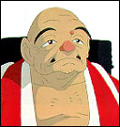

| He is one of the few young men of Emishi people, who had been defeated by Yamato regime (the Japanese Emperor's government) and now live in hiding at the end of the Northern land. He is to be the leader of his people. He has the nobleness of Royal blood and great skills as a hunter. To defend his village, he shot and killed the Tatari God, but in turn, he received a curse of death. He talks little, but has a strong sense of justice. |
| A girl who was raised by a mountain wolf. She has an intense hatred against humans who invade the forest. With a strange mask on her face, and riding a huge mountain wolf, she repeatedly attacks Tatara Ba (the iron making place). After meeting Ashitaka, her heart sways between the Gods and humans. |
| A calm and well-composed woman who leads the group of Tatara Mono (iron making people) at the foot of a deep mountain. They dig the mountain, melt iron sand, strike iron, and make Ishibiya (Stone fire arrow - the gun-like thing in the preview). She buys girls who were sold (to brothels), and gives them work at Tatara Ba, where no woman was allowed originally. She treats even outcasts from the society as "humans", and is respected and loved by both men and women. |
| One of Eboshi's men, and the leader. He is overbearing and quick to anger, and he suspects Ashitaka is a spy. But he thinks of himself as a serious guy. Some say that he is in love with Eboshi. |
|  | A member of a mysterious organization, Shishou Ren (the masters' coalition?). Under orders from the organization, he is trying to get the head of the Shishi God, which is said to have the power of eternal youth. He is also the head of Ishibiya people, and mobilizes hunters and Zibashiri ("those who run on the ground"). He is the one who told Ashitaka about the forest of the Shishi God. |
| An old medium of the hidden village of Emishi. She tells good or ill fortune by arranging stone and wooden pieces. She told the fortune of Ashitaka who was under the curse of death, and told him to head for the west. |
| One of the women who push foot bellows, and acts as their leader. She is a frank and spirited woman, and can even talk Gonza down. She also gives sharp words to her husband, Kouroku, but this is probably out of love. |
| Toki's husband and one of those who are in charge of transportation. He was attacked by Inugami (Wolf God) while he was transporting rice during a heavy rain, and fell into the valley with Kakigoromo no Yahichi (a name). He was rescued by Ashitaka. He is dominated by Toki since he is totally in love with her, but he is a man you can not dislike. |
| A 300 year old female Wolf God. She understands human language, and has high intelligence and strong power. She raised San, and treats her as her daughter. She hates humans who invade the forest of the Shishi God, and is fighting against them. She especially hates Eboshi Gozen, and wants to kill her. |
| Inoshishi Gami (Boar God) from Chinzai (Kyuusyu), who can understand human language. He is 500 years old and the oldest of the Boar Gods. Leading other Boar Gods, he commands the big offensive against humans. He is in conflict with the Wolf God Moro's family, but it has not escalated to the point of fighting. |